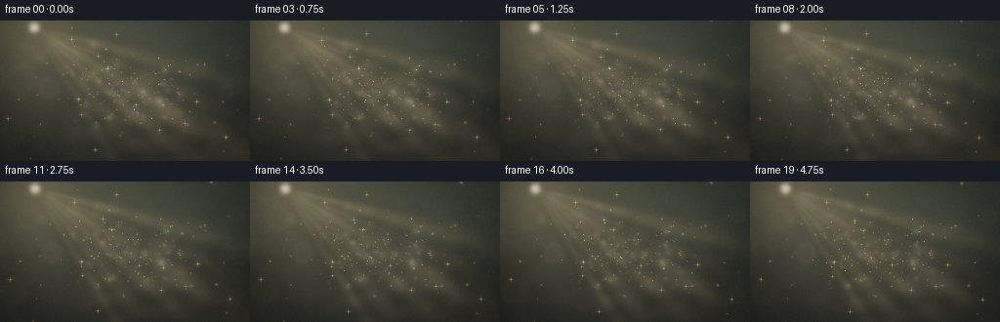
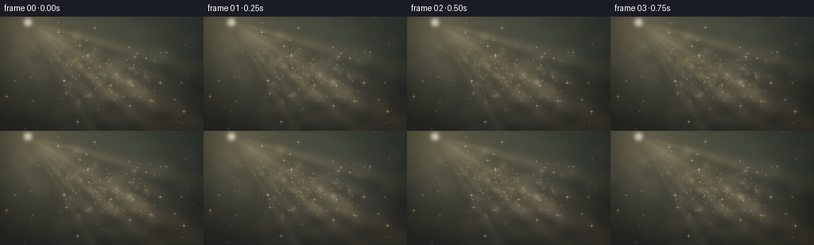
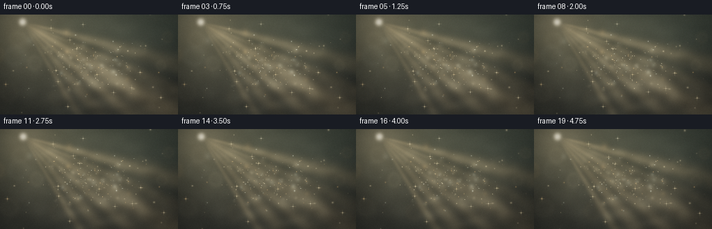
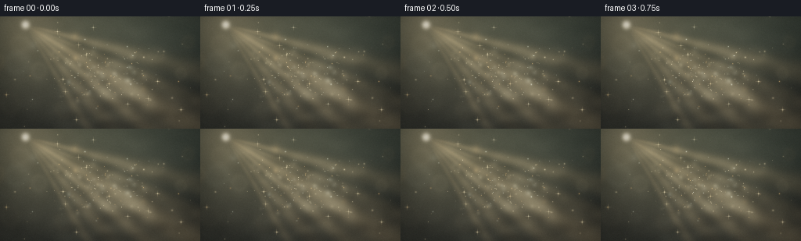

CODING AGENTS AS PIXEL WORLD MODELS
traex/DeepSeek-V4.1-Flash · phygen_079
点击播放 · 原生 RGB 像素
此结果可播放，但该运行尚未通过最终提交审核。页面展示不代表评测通过。
逐轮保存的候选
回放视频、检查图与代码变化。
每份候选均可单独播放。实际图片检查记录在下方工具轨迹中。
候选 01播放与检查图
点击播放 · 原生 RGB 像素


展开代码变化
--- 上一保存版本
+++ 本次保存版本
@@ -0,0 +1,351 @@
+"""Procedural sunlit mist for the PixelWorld text-to-video task."""
+
+from pathlib import Path
+
+import numpy as np
+from scipy.ndimage import gaussian_filter, zoom
+
+import artifact_io
+
+
+WIDTH = 256
+HEIGHT = 144
+FRAMES = 20
+FPS = 4.0
+SEED = 79041
+
+
+def smoothstep(value):
+ value = np.clip(value, 0.0, 1.0)
+ return value * value * (3.0 - 2.0 * value)
+
+
+def make_cloud_texture(rng):
+ """A slowly drifting, tile-safe soft-noise texture for atmospheric haze."""
+ coarse = rng.normal(size=(44, 78))
+ coarse = gaussian_filter(coarse, sigma=(4.0, 7.0), mode="wrap")
+ fine = rng.normal(size=(44, 78))
+ fine = gaussian_filter(fine, sigma=(1.15, 1.8), mode="wrap")
+ texture = coarse + 0.38 * fine
+ texture -= texture.min()
+ texture /= texture.max()
+ return texture
+
+
+def shifted_noise(texture, frame):
+ """Integer and subpixel drift implemented by a small Fourier shift."""
+ t = frame / FPS
+ rows, cols = texture.shape
+ yy, xx = np.mgrid[0:rows, 0:cols]
+ shift_x = 1.7 * t
+ shift_y = 0.55 * t + 0.20 * np.sin(0.8 * t)
+ phase_x = np.exp(-2j * np.pi * np.fft.fftfreq(cols)[None, :] * shift_x)
+ phase_y = np.exp(-2j * np.pi * np.fft.fftfreq(rows)[:, None] * shift_y)
+ shifted = np.fft.ifft2(np.fft.fft2(texture) * phase_y * phase_x).real
+ shifted -= shifted.min()
+ shifted /= max(shifted.max(), 1e-6)
+ return shifted
+
+
+def sample_particle_sprite(canvas, cx, cy, sigma_x, sigma_y, color, intensity, bokeh=False):
+ if intensity <= 0.0 or sigma_x <= 0.0 or sigma_y <= 0.0:
+ return
+ radius = int(np.ceil(3.0 * max(sigma_x, sigma_y))) + 2
+ left = max(0, int(np.floor(cx)) - radius)
+ right = min(WIDTH, int(np.ceil(cx)) + radius + 1)
+ top = max(0, int(np.floor(cy)) - radius)
+ bottom = min(HEIGHT, int(np.ceil(cy)) + radius + 1)
+ if left >= right or top >= bottom:
+ return
+
+ px = np.arange(left, right, dtype=np.float32) + 0.5
+ py = np.arange(top, bottom, dtype=np.float32) + 0.5
+ dx = (px[None, :] - cx) / sigma_x
+ dy = (py[:, None] - cy) / sigma_y
+ rr = np.sqrt(dx * dx + dy * dy)
+ gaussian = np.exp(-0.5 * rr * rr)
+ if bokeh:
+ halo = np.exp(-0.5 * ((rr - 1.15) / 0.30) ** 2)
+ profile = 0.54 * gaussian + 0.46 * halo
+ else:
+ profile = gaussian + 0.34 * np.exp(-0.5 * (rr / 0.38) ** 2)
+
+ canvas[top:bottom, left:right] += (
+ profile[:, :, None] * np.asarray(color, dtype=np.float32) * float(intensity)
+ )
+
+
+def build_particles(rng):
+ """Create a fixed volume of fine dust, soft mist puffs, and foreground bokeh."""
+ groups = []
+
+ count = 188
+ groups.append(
+ {
+ "x": rng.uniform(-1.38, 1.38, count),
+ "y": rng.uniform(-0.69, 0.69, count),
+ "z": rng.uniform(1.18, 4.35, count),
+ "size": rng.uniform(0.28, 0.82, count),
+ "power": rng.uniform(0.13, 0.52, count),
+ "phase_x": rng.uniform(0.0, 2.0 * np.pi, count),
+ "phase_y": rng.uniform(0.0, 2.0 * np.pi, count),
+ "phase_light": rng.uniform(0.0, 2.0 * np.pi, count),
+ "stretch": rng.uniform(0.82, 1.22, count),
+ "tint": rng.uniform(0.0, 1.0, count),
+ "kind": np.zeros(count, dtype=np.int8),
+ }
+ )
+
+ count = 38
+ groups.append(
+ {
+ "x": rng.uniform(-1.18, 1.18, count),
+ "y": rng.uniform(-0.56, 0.56, count),
+ "z": rng.uniform(1.30, 4.0, count),
+ "size": rng.uniform(1.8, 4.8, count),
+ "power": rng.uniform(0.022, 0.080, count),
+ "phase_x": rng.uniform(0.0, 2.0 * np.pi, count),
+ "phase_y": rng.uniform(0.0, 2.0 * np.pi, count),
+ "phase_light": rng.uniform(0.0, 2.0 * np.pi, count),
+ "stretch": rng.uniform(0.88, 1.14, count),
+ "tint": rng.uniform(0.0, 1.0, count),
+ "kind": np.ones(count, dtype=np.int8),
+ }
+ )
+
+ count = 12
+ groups.append(
+ {
+ "x": rng.uniform(-1.25, 1.25, count),
+ "y": rng.uniform(-0.54, 0.54, count),
+ "z": rng.uniform(1.02, 1.55, count),
+ "size": rng.uniform(4.2, 9.5, count),
+ "power": rng.uniform(0.016, 0.048, count),
+ "phase_x": rng.uniform(0.0, 2.0 * np.pi, count),
+ "phase_y": rng.uniform(0.0, 2.0 * np.pi, count),
+ "phase_light": rng.uniform(0.0, 2.0 * np.pi, count),
+ "stretch": rng.uniform(0.94, 1.08, count),
+ "tint": rng.uniform(0.0, 1.0, count),
+ "kind": np.full(count, 2, dtype=np.int8),
+ }
+ )
+
+ return {key: np.concatenate([group[key] for group in groups]) for key in groups[0]}
+
+
+def particle_color(tint):
+ ivory = np.array([1.00, 0.89, 0.64], dtype=np.float32)
+ pearl = np.array([0.94, 1.00, 0.88], dtype=np.float32)
+ amber = np.array([1.00, 0.69, 0.34], dtype=np.float32)
+ if tint < 0.58:
+ return ivory
+ if tint < 0.82:
+ return pearl
+ return amber
+
+
+def render(frame, particles, cloud_texture, rng):
+ t = frame / FPS
+ yy, xx = np.mgrid[0:HEIGHT, 0:WIDTH].astype(np.float32)
+ x = xx / (WIDTH - 1)
+ y = yy / (HEIGHT - 1)
+ ux = (xx - 0.5 * WIDTH) / HEIGHT
+ uy = (yy - 0.5 * HEIGHT) / HEIGHT
+
+ # A quiet olive-charcoal interior gives the illuminated particles contrast.
+ top = np.array([0.095, 0.122, 0.108], dtype=np.float32)
+ bottom = np.array([0.021, 0.035, 0.043], dtype=np.float32)
+ vertical = smoothstep(y * 1.08)
+ background = top[None, None, :] * (1.0 - vertical[:, :, None])
+ background += bottom[None, None, :] * vertical[:, :, None]
+
+ broad_warm = np.exp(
+ -0.5 * (((ux + 0.43) / 0.74) ** 2 + ((uy + 0.29) / 0.56) ** 2)
+ )
+ background += np.array([0.050, 0.043, 0.026], dtype=np.float32)[None, None, :] * broad_warm[:, :, None]
+
+ cloud = shifted_noise(cloud_texture, frame)
+ cloud = zoom(cloud, (HEIGHT / cloud.shape[0], WIDTH / cloud.shape[1]), order=3)
+ cloud = np.clip(cloud[:HEIGHT, :WIDTH], 0.0, 1.0)
+ cloud_soft = gaussian_filter(cloud, sigma=(3.0, 4.5))
+ cloud_soft -= cloud_soft.min()
+ cloud_soft /= max(cloud_soft.max(), 1e-6)
+
+ sun_x = 0.135 * WIDTH + 1.4 * np.sin(0.24 * t)
+ sun_y = 0.045 * HEIGHT + 0.35 * np.sin(0.31 * t + 0.4)
+ dx = xx - sun_x
+ dy = yy - sun_y
+ radius = np.sqrt(dx * dx + dy * dy) + 0.001
+ theta = np.arctan2(dy, dx)
+
+ sun_core = np.exp(-0.5 * (radius / 3.2) ** 2)
+ sun_glow = (
+ 0.58 * np.exp(-0.5 * (radius / 30.0) ** 2)
+ + 0.28 * np.exp(-0.5 * (radius / 92.0) ** 2)
+ + 0.12 * np.exp(-0.5 * (radius / 240.0) ** 2)
+ )
+
+ rays = np.zeros((HEIGHT, WIDTH), dtype=np.float32)
+ ray_angles = [0.26, 0.40, 0.54, 0.70, 0.86, 1.02]
+ ray_widths = [0.050, 0.035, 0.065, 0.043, 0.058, 0.032]
+ ray_power = [0.32, 0.23, 0.46, 0.34, 0.27, 0.19]
+ shimmer = 0.84 + 0.16 * np.sin(0.52 * t + np.arange(6))
+ for angle, width, power, pulse in zip(ray_angles, ray_widths, ray_power, shimmer):
+ center = angle + 0.010 * np.sin(0.33 * t + 2.1 * angle)
+ ribbon = np.exp(-0.5 * ((theta - center) / width) ** 2)
+ attenuation = np.exp(-radius / 255.0) * smoothstep(radius / 23.0)
+ rays += power * pulse * ribbon * attenuation
+ rays *= 0.52 + 0.68 * cloud_soft
+ rays = gaussian_filter(rays, sigma=(1.1, 1.1))
+
+ mist_envelope = np.exp(
+ -0.5 * (((ux - 0.07) / 0.76) ** 2 + ((uy - 0.06) / 0.58) ** 2)
+ )
+ lower_mist = np.exp(
+ -0.5 * (((ux + 0.02) / 0.96) ** 2 + ((uy - 0.60) / 0.27) ** 2)
+ )
+ density = mist_envelope * (0.24 + 0.76 * cloud_soft)
+ density += 0.32 * lower_mist * (0.30 + 0.70 * cloud)
+ density = gaussian_filter(density, sigma=(1.8, 2.6))
+ density *= 0.22 + 0.78 * smoothstep(rays * 1.45 + sun_glow * 0.55)
+
+ mist_color = np.array([0.74, 0.73, 0.58], dtype=np.float32)
+ scene = background
+ scene += mist_color[None, None, :] * (density * 0.34)[:, :, None]
+ ray_color = np.array([1.00, 0.73, 0.39], dtype=np.float32)
+ scene += ray_color[None, None, :] * (rays * 0.45)[:, :, None]
+ glow_color = np.array([1.00, 0.78, 0.48], dtype=np.float32)
+ scene += glow_color[None, None, :] * (sun_glow * 0.20)[:, :, None]
+ scene += np.array([1.00, 0.94, 0.78], dtype=np.float32)[None, None, :] * (sun_core * 1.15)[:, :, None]
+
+ # Project a fixed 3D particle cloud. The tiny camera drift creates parallax.
+ camera_x = 1.15 * np.sin(0.21 * t + 0.2)
+ camera_y = 0.36 * np.sin(0.17 * t + 1.4)
+ focal = 0.585 * WIDTH
+ world_x = (
+ particles["x"]
+ + 0.020 * np.sin(0.38 * t + particles["phase_x"])
+ + 0.0065 * t
+ )
+ world_y = (
+ particles["y"]
+ + 0.014 * np.sin(0.31 * t + particles["phase_y"])
+ + 0.0025 * t
+ )
+ depth = particles["z"]
+ screen_x = 0.5 * WIDTH + world_x / depth * focal + camera_x
+ screen_y = 0.5 * HEIGHT + world_y / depth * focal + camera_y
+
+ particles_layer = np.zeros((HEIGHT, WIDTH, 3), dtype=np.float32)
+ beam_sample = rays + 0.62 * sun_glow
+ for index in range(len(depth)):
+ px = screen_x[index]
+ py = screen_y[index]
+ if px < -15 or px > WIDTH + 15 or py < -15 or py > HEIGHT + 15:
+ continue
+
+ ix = int(np.clip(px, 0, WIDTH - 1))
+ iy = int(np.clip(py, 0, HEIGHT - 1))
+ light = 0.55 + 1.55 * beam_sample[iy, ix]
+ pulse = 0.90 + 0.10 * np.sin(0.72 * t + particles["phase_light"][index])
+ depth_scale = (1.55 / depth[index]) ** 0.72
+ size = particles["size"][index] * depth_scale
+ kind = int(particles["kind"][index])
+ if kind == 0:
+ size = max(0.31, size)
+ elif kind == 1:
+ size = max(1.6, size)
+ else:
+ size = max(3.8, size)
+ stretch = particles["stretch"][index]
+ sigma_x = size * (1.0 + 0.07 * np.sin(0.43 * t + index))
+ sigma_y = size * stretch
+ if kind == 0 and (index % 11 == 0):
+ sigma_x *= 1.55
+ sigma_y *= 0.78
+
+ color = particle_color(particles["tint"][index])
+ intensity = particles["power"][index] * light * pulse
+ if kind == 2:
+ intensity *= 0.88
+ sample_particle_sprite(
+ particles_layer,
+ px,
+ py,
+ sigma_x,
+ sigma_y,
+ color,
+ intensity,
+ bokeh=(kind == 2),
+ )
+
+ # A few restrained four-point glints make the closest illuminated motes read.
+ glints = np.zeros((HEIGHT, WIDTH), dtype=np.float32)
+ candidates = np.argsort(particles["power"] * (1.55 / depth) ** 0.7)[-18:]
+ for index in candidates:
+ px = screen_x[index]
+ py = screen_y[index]
+ if not (5 <= px < WIDTH - 5 and 5 <= py < HEIGHT - 5):
+ continue
+ ix = int(px)
+ iy = int(py)
+ local_light = beam_sample[iy, ix]
+ strength = 0.10 + 0.20 * local_light
+ gx = np.arange(-4, 5, dtype=np.float32)
+ gy = np.arange(-4, 5, dtype=np.float32)
+ hx = np.exp(-0.5 * (gx / 2.2) ** 2) * np.exp(-0.5 * (gy[:, None] / 0.38) ** 2)
+ vx = np.exp(-0.5 * (gx / 0.38) ** 2) * np.exp(-0.5 * (gy[:, None] / 2.2) ** 2)
+ patch = strength * (hx + vx)
+ left = int(px) - 4
+ top = int(py) - 4
+ left0 = max(0, left)
+ top0 = max(0, top)
+ right0 = min(WIDTH, left + 9)
+ bottom0 = min(HEIGHT, top + 9)
+ glints[top0:bottom0, left0:right0] += patch[
+ top0 - top : bottom0 - top, left0 - left : right0 - left
+ ]
+
+ scene += particles_layer
+ scene += np.array([1.00, 0.86, 0.58], dtype=np.float32)[None, None, :] * glints[:, :, None]
+
+ # Soft, layered bloom preserves the glow while keeping the finest motes sharp.
+ bloom_source = particles_layer + scene * 0.12
+ bloom = 0.20 * gaussian_filter(bloom_source, sigma=(1.3, 1.3, 0))
+ bloom += 0.13 * gaussian_filter(bloom_source, sigma=(4.2, 4.2, 0))
+ bloom += 0.055 * gaussian_filter(bloom_source, sigma=(11.0, 11.0, 0))
+ scene += bloom
+
+ # Gentle filmic shoulder, warm highlights, cool shadows, and vignette.
+ exposure = 1.28
+ scene = 1.0 - np.exp(-exposure * np.maximum(scene, 0.0))
+ scene = np.power(np.clip(scene, 0.0, 1.0), 0.92)
+ luminance = np.sum(scene * np.array([0.2126, 0.7152, 0.0722]), axis=2, keepdims=True)
+ scene += (1.0 - luminance) * np.array([0.004, 0.009, 0.014], dtype=np.float32)
+ scene += luminance * np.array([0.018, 0.009, -0.004], dtype=np.float32)
+
+ vignette_radius = np.sqrt((ux / 1.05) ** 2 + (uy / 0.80) ** 2)
+ vignette = 1.0 - 0.27 * smoothstep((vignette_radius - 0.40) / 0.82)
+ scene *= vignette[:, :, None]
+
+ grain_rng = np.random.default_rng(SEED + 1000 + frame)
+ grain = grain_rng.normal(0.0, 0.0045, size=(HEIGHT, WIDTH, 1)).astype(np.float32)
+ grain = gaussian_filter(grain, sigma=(0.42, 0.42, 0))
+ scene += grain
+ scene += grain_rng.uniform(-0.0016, 0.0016, size=(HEIGHT, WIDTH, 3)).astype(np.float32)
+ return np.clip(np.rint(scene * 255.0), 0, 255).astype(np.uint8)
+
+
+def main():
+ rng = np.random.default_rng(SEED)
+ particles = build_particles(rng)
+ cloud_texture = make_cloud_texture(rng)
+ frames = np.stack(
+ [render(index, particles, cloud_texture, rng) for index in range(FRAMES)],
+ axis=0,
+ )
+ artifact_io.save(frames, Path(__file__).resolve().parent)
+
+
+if __name__ == "__main__":
+ main()
候选 02播放与检查图
点击播放 · 原生 RGB 像素


展开代码变化
--- 上一保存版本
+++ 本次保存版本
@@ -171,8 +171,8 @@
cloud_soft -= cloud_soft.min()
cloud_soft /= max(cloud_soft.max(), 1e-6)
- sun_x = 0.135 * WIDTH + 1.4 * np.sin(0.24 * t)
- sun_y = 0.045 * HEIGHT + 0.35 * np.sin(0.31 * t + 0.4)
+ sun_x = 0.125 * WIDTH + 1.4 * np.sin(0.24 * t)
+ sun_y = 0.070 * HEIGHT + 0.35 * np.sin(0.31 * t + 0.4)
dx = xx - sun_x
dy = yy - sun_y
radius = np.sqrt(dx * dx + dy * dy) + 0.001
@@ -187,15 +187,15 @@
rays = np.zeros((HEIGHT, WIDTH), dtype=np.float32)
ray_angles = [0.26, 0.40, 0.54, 0.70, 0.86, 1.02]
- ray_widths = [0.050, 0.035, 0.065, 0.043, 0.058, 0.032]
- ray_power = [0.32, 0.23, 0.46, 0.34, 0.27, 0.19]
+ ray_widths = [0.047, 0.034, 0.062, 0.041, 0.055, 0.031]
+ ray_power = [0.40, 0.27, 0.53, 0.39, 0.31, 0.22]
shimmer = 0.84 + 0.16 * np.sin(0.52 * t + np.arange(6))
for angle, width, power, pulse in zip(ray_angles, ray_widths, ray_power, shimmer):
center = angle + 0.010 * np.sin(0.33 * t + 2.1 * angle)
ribbon = np.exp(-0.5 * ((theta - center) / width) ** 2)
attenuation = np.exp(-radius / 255.0) * smoothstep(radius / 23.0)
rays += power * pulse * ribbon * attenuation
- rays *= 0.52 + 0.68 * cloud_soft
+ rays *= 0.58 + 0.78 * cloud_soft
rays = gaussian_filter(rays, sigma=(1.1, 1.1))
mist_envelope = np.exp(
@@ -207,13 +207,13 @@
density = mist_envelope * (0.24 + 0.76 * cloud_soft)
density += 0.32 * lower_mist * (0.30 + 0.70 * cloud)
density = gaussian_filter(density, sigma=(1.8, 2.6))
- density *= 0.22 + 0.78 * smoothstep(rays * 1.45 + sun_glow * 0.55)
+ density *= 0.27 + 0.83 * smoothstep(rays * 1.65 + sun_glow * 0.60)
mist_color = np.array([0.74, 0.73, 0.58], dtype=np.float32)
scene = background
- scene += mist_color[None, None, :] * (density * 0.34)[:, :, None]
+ scene += mist_color[None, None, :] * (density * 0.41)[:, :, None]
ray_color = np.array([1.00, 0.73, 0.39], dtype=np.float32)
- scene += ray_color[None, None, :] * (rays * 0.45)[:, :, None]
+ scene += ray_color[None, None, :] * (rays * 0.58)[:, :, None]
glow_color = np.array([1.00, 0.78, 0.48], dtype=np.float32)
scene += glow_color[None, None, :] * (sun_glow * 0.20)[:, :, None]
scene += np.array([1.00, 0.94, 0.78], dtype=np.float32)[None, None, :] * (sun_core * 1.15)[:, :, None]
@@ -246,7 +246,7 @@
ix = int(np.clip(px, 0, WIDTH - 1))
iy = int(np.clip(py, 0, HEIGHT - 1))
- light = 0.55 + 1.55 * beam_sample[iy, ix]
+ light = 0.61 + 1.78 * beam_sample[iy, ix]
pulse = 0.90 + 0.10 * np.sin(0.72 * t + particles["phase_light"][index])
depth_scale = (1.55 / depth[index]) ** 0.72
size = particles["size"][index] * depth_scale
@@ -267,7 +267,7 @@
color = particle_color(particles["tint"][index])
intensity = particles["power"][index] * light * pulse
if kind == 2:
- intensity *= 0.88
+ intensity *= 0.98
sample_particle_sprite(
particles_layer,
px,
@@ -317,7 +317,7 @@
scene += bloom
# Gentle filmic shoulder, warm highlights, cool shadows, and vignette.
- exposure = 1.28
+ exposure = 1.34
scene = 1.0 - np.exp(-exposure * np.maximum(scene, 0.0))
scene = np.power(np.clip(scene, 0.0, 1.0), 0.92)
luminance = np.sum(scene * np.array([0.2126, 0.7152, 0.0722]), axis=2, keepdims=True)
可观测工具轨迹
实际执行的命令与返回图片。
命令 1exit 0
/bin/bash -c "pwd && rg --files -g '"'!*'"\\.git*' | sed -n '1,120p'"
命令 2exit 0
/bin/bash -c "sed -n '1,240p' prompt.txt"
命令 3exit 0
/bin/bash -c "sed -n '1,280p' GENERATION_RULES.md"
命令 4exit 0
/bin/bash -c 'cat task_spec.json'
命令 5exit 0
/bin/bash -c "sed -n '1,260p' artifact_io.py"
命令 6exit 0
/bin/bash -c "sed -n '1,260p' player_template.html"
命令 7exit 0
/bin/bash -c "find . -maxdepth 2 -type f -printf '%p %s bytes\\n' | sort"
命令 8exit 0
/bin/bash -c "python - <<'PY'
import sys, numpy, PIL
print(sys.version)
print('numpy', numpy.__version__)
print('PIL', PIL.__version__)
try:
import scipy
print('scipy', scipy.__version__)
except Exception as e:
print('scipy unavailable', e)
PY"命令 9exit 1
/bin/bash -c 'python generate.py'
命令 10exit 0
/bin/bash -c 'python generate.py'
命令 11exit 0
/bin/bash -c "find frames -maxdepth 1 -type f -printf '%f %s\\n' | sort; du -h pixels.npz index.html inspection.png transition_check.png"
命令 12exit 0
/bin/bash -c "python - <<'PY'
import numpy as np
from PIL import Image
x=np.load('pixels.npz')['pixels']
print('shape',x.shape,'dtype',x.dtype,'min/max',x.min(),x.max())
for i in [0,4,9,14,19]:
f=np.stack([(x>>16)&255,(x>>8)&255,x&255],axis=-1)[i]
print(i,'mean',f.mean((0,1)).round(2),'p50',np.percentile(f,50).round(1),'p95',np.percentile(f,95).round(1),'std',f.std((0,1)).round(2))
d=np.abs(np.diff(np.stack([(x>>16)&255,(x>>8)&255,x&255],axis=-1),axis=0)).mean()
print('mean temporal abs diff',d)
PY"命令 13exit 0
/bin/bash -c 'command -v chafa || true; command -v viu || true; command -v img2txt || true; command -v ffmpeg || true; command -v ffprobe || true'
命令 14exit 0
/bin/bash -c "python - <<'PY'
from PIL import Image
im=Image.open('inspection.png')
print(im.size, im.mode)
# Print a compact luminance map of the first rendered frame for visual structure.
rgb=Image.open('frames/09.png').convert('RGB').resize((64,24))
chars=' .:-=+*#%@'
for y in range(24):
row=''
for x in range(64):
r,g,b=rgb.getpixel((x,y)); l=(.2126*r+.7152*g+.0722*b)/255
row+=chars[min(9,int(l*12))]
print(row)
PY"命令 15exit 0
/bin/bash -c "python - <<'PY' import importlib.util for name in ['cv2','imageio','matplotlib','moviepy']: print(name, bool(importlib.util.find_spec(name))) PY"
命令 16exit 0
/bin/bash -c "python - <<'PY'
from PIL import Image
import numpy as np
x=np.stack([np.asarray(Image.open(f'frames/{i:02d}.png')).astype(float) for i in range(20)])
d=np.abs(np.diff(x,axis=0))
print('temporal mean',d.mean(),'p95',np.percentile(d,95),'changed pixels',(d.max(-1)>1).mean())
for i in range(19): print(i,round(float(d[i].mean()),3))
PY"命令 17exit 0
/bin/bash -c "mkdir -p candidates/v1 && cp -a frames pixels.npz inspection.png transition_check.png index.html candidates/v1/ && find candidates/v1 -maxdepth 1 -type f -printf '%f %s\\n' | sort | sed -n '1,10p'"
命令 18exit 0
/bin/bash -c 'python generate.py'
命令 19exit 0
/bin/bash -c "python - <<'PY'
from PIL import Image
import numpy as np
for ver in ['candidates/v1','.']:
p=f'{ver}/frames/09.png'
f=np.asarray(Image.open(p)).astype(float)
print(ver,'mean',f.mean((0,1)).round(2),'p95',np.percentile(f,95).round(1),'lum std',np.std(f@np.array([.2126,.7152,.0722])).round(2))
# Check exact final contract.
x=np.load('pixels.npz')['pixels']
print('pixels',x.shape,x.dtype,'frames',len(__import__('glob').glob('frames/*.png')))
PY"命令 20exit 0
/bin/bash -c "python -m py_compile generate.py && python - <<'PY'
import importlib.util
print('playwright', bool(importlib.util.find_spec('playwright')))
PY"命令 21exit 130
/bin/bash -c "python - <<'PY'
from pathlib import Path
from playwright.sync_api import sync_playwright
url=Path('index.html').resolve().as_uri()
with sync_playwright() as p:
browser=p.chromium.launch(headless=True)
page=browser.new_page(viewport={'width':900,'height':600})
errors=[]
page.on('pageerror', lambda e: errors.append(str(e)))
page.goto(url)
page.wait_for_function('window.__pixelReady === true', timeout=15000)
state=page.evaluate('''() => ({
canvas: [document.querySelector(\"canvas\").width, document.querySelector(\"canvas\").height],
time: document.querySelector(\"output\").textContent,
frames: DATA.frames, fps: DATA.fps, caption: document.getElementById(\"caption\").textContent
})''')
page.click('#play')
page.wait_for_timeout(900)
state['playingTime']=page.locator('output').inner_text()
page.screenshot(path='.tmp/player.png')
print('state',state)
print('errors',errors)
browser.close()
PY"命令 22exit 0
/bin/bash -c 'sha256sum pixels.npz frames/00.png frames/19.png > .tmp/hash_before.txt && python generate.py && sha256sum pixels.npz frames/00.png frames/19.png > .tmp/hash_after.txt && diff -u .tmp/hash_before.txt .tmp/hash_after.txt && cat .tmp/hash_after.txt'
命令 23exit 1
/bin/bash -c "python - <<'PY'
import base64, json, re
from pathlib import Path
import numpy as np
from PIL import Image
spec=json.loads(Path('task_spec.json').read_text())
frames=np.stack([np.asarray(Image.open(f'frames/{i:02d}.png')) for i in range(spec['frames'])])
assert frames.shape == (20,144,256,3), frames.shape
assert frames.dtype == np.uint8
assert len(list(Path('frames').glob('*.png'))) == 20
p=np.load('pixels.npz')['pixels']
assert p.shape == (144,256,20) and p.dtype == np.uint32
decoded=np.stack([(p>>16)&255,(p>>8)&255,p&255],axis=-1).transpose(2,0,1)
assert np.array_equal(decoded,frames)
html=Path('index.html').read_text()
match=re.search(r'const DATA=(\\{.*?\\}),W=',html)
assert match
payload=json.loads(match.group(1))
assert payload['width']==256 and payload['height']==144 and payload['frames']==20 and payload['fps']==4.0
assert len(payload['deltas']) == 19 and payload['caption'].startswith('A bunch of mist particles')
print('PASS: 20 RGB frames, 256x144, 4 fps; npz, PNGs, and player payload agree')
print('frame0 mean RGB',frames[0].mean((0,1)).round(2),'frame19 mean RGB',frames[-1].mean((0,1)).round(2))
PY"命令 24exit 0
/bin/bash -c "python - <<'PY'
import json, re
from pathlib import Path
import numpy as np
from PIL import Image
spec=json.loads(Path('task_spec.json').read_text())
frames=np.stack([np.asarray(Image.open(f'frames/{i:02d}.png')) for i in range(spec['frames'])])
assert frames.shape == (20,144,256,3), frames.shape
assert frames.dtype == np.uint8
assert len(list(Path('frames').glob('*.png'))) == 20
p=np.load('pixels.npz')['pixels']
assert p.shape == (144,256,20) and p.dtype == np.uint32
decoded=np.stack([(p>>16)&255,(p>>8)&255,p&255],axis=-1).transpose(2,0,1,3)
assert np.array_equal(decoded,frames)
html=Path('index.html').read_text()
match=re.search(r'const DATA=(\\{.*?\\}),W=',html)
assert match
payload=json.loads(match.group(1))
assert payload['width']==256 and payload['height']==144 and payload['frames']==20 and payload['fps']==4.0
assert len(payload['deltas']) == 19 and payload['caption'].startswith('A bunch of mist particles')
print('PASS: 20 RGB frames, 256x144, 4 fps; npz, PNGs, and player payload agree')
print('frame0 mean RGB',frames[0].mean((0,1)).round(2),'frame19 mean RGB',frames[-1].mean((0,1)).round(2))
PY"保存候选 2 份；完成命令 24 次；可验证图片返回 0 张。原始 API 响应与完整日志保留在本地。